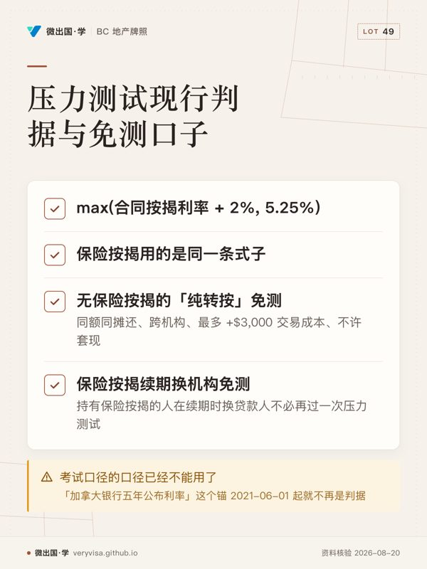

核实日期：2026-09-05（OSFI、加拿大财政部、CMHC、Sagen、BC Laws、BCFSA 当天逐页回读）。出处见文末源表。 这一章是整本考试口径里数字过期最密的一章：考试口径定稿于 2020 年，而按揭核贷的每一道硬门槛 ——压力测试利率、保险按揭房价上限、摊还年限、偿债比阈值——在 2021 到 2025 年间全部换过一遍。 长青的是逻辑（两把尺子取小者），过期的是数字。本篇把两者分开写。
一、这一章在制度里的位置：三层规则，各管一段
本节回答This section answers 贷款人真正要的是什么What the lender actually wants
买家问「我能借多少」，答案不是一个人定的。2026 年在 BC 买房，一笔住宅按揭同时受三层规则约束：
| 层 | 谁定 | 管什么 | 性质 |
|---|---|---|---|
| 联邦审慎监管 | 金融机构监管办公室（OSFI，Office of the Superintendent of Financial Institutions），B-20 指引 | 联邦受监管金融机构（FRFI：特许银行、信托贷款公司、寿险公司）怎么核贷、按什么利率测算借款人 | 监管期望，不是法条；违反的后果是监管处置，不是合同无效 |
| 保险人规则 | CMHC（加拿大按揭与住房公司）、Sagen、Canada Guaranty，叠加联邦财政部对可投保按揭的规定 | 首付不足 20% 的按揭能不能做、房价上限、摊还上限、偿债比上限、最低信用分 | 投保条件。不满足就根本拿不到高成数贷款 |
| 省级从业监管 | BC 金融服务管理局（BCFSA），依《按揭服务法》(Mortgage Services Act, SBC 2022, c. 27) | 谁可以在 BC 提供按揭服务、怎么披露、怎么罚 | 省法。2026-10-13 生效，取代并废止旧《按揭经纪法》(Mortgage Brokers Act, RSBC 1996, c. 313) |
底层逻辑：贷款人真正想要的不是房子，是那一串按时到账的还款。 考试口径那一章反复讲的一句话至今成立—— 取消赎回权（foreclosure）是最后手段，不是目标。所以核贷的重心永远在借款人还不还得起、会不会还， 抵押物只是第二道防线。理解了这一点，后面所有的门槛都能推出来：LTV 那把尺守的是第二道防线， 偿债比那把尺守的是第一道。
地产持牌人在这一格的法定位置：你既不是贷款人，也不是按揭经纪。你的动作只有三个—— 把客户送去做预批、把交易条件讲清楚、按规则披露你从这条转介里拿到的钱。
✕
转介按揭经纪拿到的钱，必须及时披露
《地产服务规则》(Real Estate Services Rules, B.C. Reg. 209/2021) s. 56(1)(b)(i) 现行点名的是 「a home inspector, notary public, lawyer or savings institution or a licensee under the Mortgage Services Act」 （2026-10-13 起由 B.C. Reg. 84/2026 把原来的「mortgage broker」改成按揭服务法下的持牌人）：持牌人因推荐或转介 按揭经纪、验房师、公证人、律师、储蓄机构而直接或间接收到的报酬（不是客户直接付给你的那部分）， 必须及时向客户披露，且披露内容要含 s. 56(2) 列的三件事：报酬来源、金额（金额未定时给可能金额或计算方法）、 其他相关事实。
更硬的一条在按揭法这一侧：2026-10-13 起生效的《按揭服务法》s. 3(2) 规定，个人为直接或间接报酬 提供按揭服务（替他人撮合、谈判或安排按揭，向贷款人提供借款人资料，替贷款人评估借款人等，见 s. 1 「dealing in mortgages」定义），必须持牌，除非落进法定豁免。旧《按揭经纪法》「一年内收费 $1,000 以上 才算按揭经纪」那条数量门槛已随旧法废止，不能再拿来判断。与地产持牌人最相关的两条豁免在 《Mortgage Services Regulation》(B.C. Reg. 109/2025)：s. 4——地产持牌人在地产交易中安排卖方回按（VTB）， 只要不对外自称提供其他按揭服务，免牌；s. 10——只做转介、只提供对方姓名与联系方式、且不以转介为业的个人，免牌。 违反 s. 3 属犯罪，依 s. 67(2)，个人首次定罪最高罚 $1.25 million 或监禁两年，或两者并罚。 注意 s. 6：未持牌不会让那笔按揭本身无效、可撤销或不可执行——受罚的是人，不是合同。这两件事考试和实务都常被合并成一句错话。
二、贷款人看什么：五个 C 与信用分析
本节回答This section answers 预批是不是已经答应放款Whether a pre-approval is already a promise to advance 本章考题 1Question 1
这一节是本章的长青层，2020 年怎么教，2026 年还怎么用，也是卷面上出题密度最高的一节。
信用五要素（Five Cs of Credit），考卷会要求你按英文名认出来：
| C | 英文 | 问的问题 | 材料从哪来 |
|---|---|---|---|
| 品格 | Character | 这个人会不会还？ | 就业稳定性、居住时长、行业经验；主观判断 |
| 资本 | Capital | 他自己往这套房里投多少钱（首付）？会不会攒钱？ | 申请表的资产负债栏 |
| 还款能力 | Capacity | 这个人还得起吗？ | 年总收入 ÷ 偿债比约束 |
| 信用记录 | Credit | 过去还款的习惯如何？ | 征信报告 |
| 抵押物 | Collateral | 万一还不上，拿什么补？ | 房产本身 |
Character 与 Capacity 是两件事，这是最容易混的一对：前者问「会不会」（行为预测），后者问「能不能」（财务测算）。 考试口径那句话说得准确——核贷同时是一次财务预测和一次行为预测。
征信：加拿大两家征信局是 Equifax 与 TransUnion，分数区间 300 到 900。 报告上还有分项代码：循环信贷（信用卡）用 R1 到 R9，R1 表示按时还，R9 表示已进催收； 分期贷款（银行贷款）用 I1 到 I9，含义相同。分数只是报告的一部分，破产、消费者提案、查询次数都要单独看， 而且报告反映的只是过去，不含解释性情况——所以贷款人应当就报告上的记录与申请人当面谈一次。
总收入（gross income）的定义各家不同，这一条至今成立而且很要紧：有的贷款人只认主要收入者的工资， 有的认主要收入者 100% 加次要收入者 50% 到 100%，有的还加计一部分投资收入。 资金宽松时定义放宽、资金紧张时定义收紧——这是一种不改利率的「非价格配给」。 验证靠雇主证明信、T4、工资单或财务报表。
自雇收入：考试口径在这里有一条明确的错（见第十节对照表）。2026 现行做法是——CMHC 有专门的自雇产品， 最高可做到 95% 的贷款价值比、且不额外收费；建议有 24 个月经营或同业经验，但对刚自雇不久的人有弹性 （收购已有生意、现金储备充足、收入可预测、既往培训与用信记录都可作为补充因素）。 独资或合伙的自雇收入在核算时可上浮 15%，或用「加回」(add back) 可抵扣项的方式还原。 验证材料是税务评估通知书（NOA）配 T1 General、T2125 营业表。
租金收入要分情况，考试口径那一段的口径已经不能照搬。2026 CMHC 的做法按「是否自住」「是否本次申请的标的物」分叉： 自住且是本次申请标的物的 2 个单元物业，可按最高 100% 的毛租金收入加进总收入； 3 到 4 个单元的，用最高 50% 毛租金收入法，或者净租金收入法；非自住的按 50% 毛租金法或净租金法。 用毛租金法时，标的物的地税与取暖费可以不再单列。
预批（pre-approved mortgage）：考试口径是预批会锁定利率 60 到 120 天，期间利率上升按锁定价、 下降通常给低的那个——这一条是行业惯例，至今大体成立。
⚠️
预批不是承诺放款
预批算的是「按你当下的财务状况，最多能借多少」，而且它必须以令贷款人满意的估价为条件。 最终额度按买到的那套房的贷款价值（不是成交价）重算。给客户讲这一格时的正确说法是 「预批告诉你价格区间，不告诉你这套房一定批得下来」。持牌人把预批说成「银行已经同意贷你这么多」， 是这一格最常见的错误陈述。
三、两把尺子：抵押物那把与收入那把
本节回答This section answers 无保险按揭越过八成行不行Whether an uninsured mortgage may go past 80% 本章考题 2Question 2 本章考题 3Question 3
这是全章最长青、也最常考的骨架：贷款人分别算两个上限，然后取较小的那一个。

尺子一：贷款价值比（Loan-to-Value Ratio, LTV）
最大贷款额 = 贷款价值比 × 贷款价值
这里的贷款价值（lending value）不是成交价，也不是市场价值，卷面上这三个词的分辨是必考点：
| 词 | 英文 | 含义 | 相对大小 |
|---|---|---|---|
| 成交价 | purchase price | 买卖双方谈出来的那个数 | — |
| 购置成本 | purchase cost | 成交价 加律师费、估价费、征信费等全部费用与任何奖金 | 一定大于成交价 |
| 市场价值 | market value | 公平交易下、信息充分的一般买卖双方、合理挂牌期内可能成交的估计值 | — |
| 贷款价值 | lending value | 为放贷目的做的长期、保守估值，剔除短期与投机性因素 | 通常小于市场价值，偶尔相等，几乎不会更高 |
贷款人按市场价值与贷款价值中较低的那个来审；同一处住宅两份估价相差 3% 到 5% 时，取低的那份。 所以「我出价 $800,000 银行就按 $800,000 的八成贷给我」是错的——买贵了的那部分，银行不认。
80% 那条线是法定的：联邦特许金融机构做无保险按揭，贷款价值比上限就是 80%； 这种只有借款人个人承诺加房产作保的贷款叫常规按揭（conventional mortgage）。 超过 80% 的必须投保，叫高成数／保险按揭（high-ratio / insured mortgage），可做到 95%。 私人贷款人不受这条约束，实务中通常在 75% 到 90% 之间。
尺子二：偿债比（debt service ratios）
考试口径用两条简化式说明计算结构（本站计算题会在题干写明省略了哪些项目）：
毛偿债比 GDSR = (P + I + T) ÷ 年总收入
总偿债比 TDSR = (P + I + T + 其他全部债务还款) ÷ 年总收入
其中 P + I 是年度本息还款，T 是地税。记住变形式，因为题目通常反着问：
P + I = (GDSR × 年总收入) − T
但现行法与保险人的实际口径比这两条式子宽一格，也严一格：2026 年 CMHC 的毛偿债比算的是 P.I.T.H.——本金、利息、地税、取暖费，再加共管物业管理费的 50%（租赁地产权的年地租也算进去）； 总偿债比在此基础上加全部其他债务。给客户讲的时候必须用后一套口径，因为取暖费和一半管理费 在温哥华的共管公寓上足以吃掉几万块的贷款额度；本站计算题按题干明确给出的成本与假设算，不能把旧版省略项当成现行统一口径。
阈值也全换过（详见第十节）。2026 年 CMHC 的上限是 毛偿债比 39%、总偿债比 44%， 这是保险按揭的硬门槛；无保险按揭的阈值由各贷款人自定，B-20 不给数字，只要求「算得保守、按压力情形测算」。
两把尺子取较小者——这是本章唯一一条永远不会过期的结论。抵押物那把尺卡住时， 解法是加首付或换便宜的房；收入那把尺卡住时，解法是延长摊还、降利率、还掉其他债务或找担保人。
四、压力测试：2026 年的口径只剩一句话
本节回答This section answers 考试里两侧是否各一套口径Whether the exam gives each of the two sides its own standard 本章考题 5Question 5
考试口径的口径已经不能用了。 考试口径说合格利率取「加拿大银行五年公布利率」与「合同利率 +2%」两者中的高者—— 「加拿大银行五年公布利率」这个锚 2021-06-01 起就不再是判据。
2026 年的现行口径（OSFI 官网 2026-01-29 更新）：
最低合格利率 MQR = max(合同按揭利率 + 2%, 5.25%)
OSFI 把它拆成两个部件：缓冲（buffer）现为 2%，下限（floor）现为 5.25%。 两者由监管专员设定、至少每年复核一次，B-20 正文本身不写死数字，只写「取合同利率加缓冲与下限中的较高者」。 所以复查这条规则时，要复查的是 OSFI 那一页上的两个部件，而不是考试口径上的那句话。
保险按揭用的是同一条式子。CMHC 现行产品页把它写进了核贷条件：偿债比必须按 「合同利率 +2% 与 5.25% 中的较高者」计算。也就是说 2026 年保险与非保险两侧的压力测试利率口径已经合流， 考试口径里「保险按揭一套、非保险按揭另一套」的叙述是 2016 到 2020 年的历史。
两个免测的口子，都是考试口径定稿之后开的：
- 无保险按揭的「纯转按」(straight switch)：2024-11-21 起，OSFI 不再要求对这种情形套用规定的最低合格利率。 条件很窄——转的必须是一笔独立的无保险按揭，从一家联邦受监管金融机构转到另一家， 剩余摊还期不加长、贷款金额不增加（未偿本金只允许增加最多 $3,000 用于罚金手续费一类的交易成本，不许套现）。 免的只是「监管规定的那个合格利率」，不免尽职调查：新机构仍须按 B-20 当作一笔新贷款审， 偿债比仍要算得保守、按更高利率与收入下降的情形测算。
- 保险按揭续期换机构：强化版《加拿大按揭约章》(Canadian Mortgage Charter) 之下， 持有保险按揭的人在续期时换贷款人不必再过一次压力测试。
同一时期收紧的一条：OSFI 对各机构无保险按揭组合引入了贷款收入比（loan-to-income, LTI）上限， 自各机构 2025 财年第一季度起执行。这一条约束的是机构的组合，不是单个借款人或单笔交易—— 客户问「我的贷款收入比超了会不会被拒」，答案是这条限额不落在他头上，但它会影响某家银行在某个季度还愿不愿意做他这一类的单子。
ℹ️
压力测试不是在预测利率会涨到 5.25% 以上
它是一道安全边际：用一个比合同利率高的数去算你的还款能力，为的是续期时利率上行、 或收入下降时你仍还得起。给客户讲这一格的正确说法是「银行按 6.5% 算你的还款能力， 但你实际按 4.5% 还款」——不是「你的利率是 6.5%」。这句话说反了，客户会以为自己被加了息。
五、按揭违约保险：2026 年的四道硬门槛
本节回答This section answers 保险按揭信用分卡在哪里Where the credit-score rule sits on an insured mortgage 本章考题 4Question 4
首付不足 20% 时必须投保，保的是贷款人不是借款人：借款人违约、房子卖掉仍不够还， 保险人补贷款人的差额，然后接手对借款人的个人追索权。保费由贷款人交、成本转嫁给借款人。
三家保险人：CMHC（联邦官方住房机构）、Sagen、Canada Guaranty。 考试口径里的 "Genworth Financial Canada" 已更名为 Sagen（Sagen 官网自述 previously known as Genworth Canada），这个名字在 2026 年的现行文件里不会再出现。
门槛一：房价上限 $1,500,000。 2024-09-16 联邦财政部宣布把保险按揭的房价上限从 $1,000,000 提到 $1,500,000，2024-12-15 生效（这个上限自 2012 年起就没动过）。CMHC 现行页的写法是 「购价／贷款价值须低于 $1,500,000」——注意是低于，不是等于。小型出租物业贷款的上限是 $1,000,000。 房价到了 $1,500,000 或以上，就只有 20% 首付这一条路，这是持牌人在温哥华报价区间最常用到的一条。
门槛二：首付分段。
| 购价区间 | 最低首付 |
|---|---|
| $500,000 及以下 | 5% |
| 超过 $500,000 | 前 $500,000 部分 5%，超出部分 10% |
| $1,500,000 及以上 | 20%（不能投保，只能走常规按揭） |
3 到 4 个单元的自住物业最低权益 10%（贷款价值比上限 90%）；1 到 2 个单元可到 95%。
门槛三：摊还年限。 保险按揭的一般上限仍是 25 年；但 2024-12-15 起， 首次购房者或购买从未有人住过的新建房的买家可做到 30 年——CMHC 把它做成了一个单独产品线 （其「首次购房者」的定义是：从未在加拿大买过房；或本年及前四个日历年内未自住过本人或配偶名下的房； 或因婚姻／同居关系破裂分居满 90 天且分居始于本年或前四个日历年内）。 更早一步是 2024-08-01，当时 30 年摊还只开给「首次购房者买新建房」，2024-12-15 才扩到全部首购者与全部新建房买家。
门槛四：最低信用分 600。 至少一名借款人（或担保人）的信用分要到 600；无信用记录的可走替代认定方式。 这个数是考试口径那一章里少数没有变过的数字。
2026 年保费表（占贷款额的百分比，一次性收取，可加进贷款）：
| 贷款价值比 | 25 年及以内摊还 | 摊还超过 25 年 |
|---|---|---|
| 65% 及以下 | 0.60% | +0.20% |
| 65.01% – 75% | 1.70% | +0.20% |
| 75.01% – 80% | 2.40% | +0.20% |
| 80.01% – 85% | 2.80% | 3.00% |
| 85.01% – 90% | 3.10% | 3.30% |
| 90.01% – 95% | 4.00% | 4.20% |
| 90.01% – 95%（非传统首付来源） | 4.50% | 4.70% |
摊还超过 25 年的，一律加收 0.20% 的保费附加——这一条是 30 年摊还新政的直接产物，考试口径定稿时不存在。 Sagen 的现行费率表与上表相同，同样注明「摊还超过 25 年（最高 30 年）另加 0.20%」。
三条计算规则，考卷上年年考：
- 保费加进贷款额时，不计入贷款价值比的计算；
- 但计入偿债比——因为你要按含保费的面值还款；
- 续期或期末不再另收保费，保险覆盖整个摊还期。
省销售税：安大略、魁北克、萨斯喀彻温三省对保费征省销售税，且税款不能加进贷款额。 BC 不在这三个省之列——给 BC 客户算首期现金时，这一格是零。
一个 2026 年才有的口子：CMHC 有一条专门用于加建二级套房的再融资产品—— 连同现有单元最多 4 个单元、贷款价值比最高 90%、改造后物业价值须低于 $2,000,000、摊还最长 30 年； 资金只能用于该二级套房的建造（不许套现），且建成的套房不得用作短租（不得出租任何少于 90 个连续日的期间）。 这一条与 BC 省的加密（gentle densification）政策和短租限制是同一套逻辑，客户问「加个套房怎么融资」时用得上。
六、把两把尺子真算一遍（2026 示例）
本节回答This section answers 出租楼拿谁的收入来核Whose income is used to qualify a rental building
下面三个情景的数字都是为教学自设的整数，利率按加拿大惯例的半年计息（j₂）报出。
情景一：首付不足 20%（保险按揭），收入那把尺卡住
某买家看中素里一套挂牌 $800,000 的独立屋，手上现金 $55,000，家庭年总收入 $150,000， 该房年地税 $3,600、年取暖费 $1,200，无共管管理费。银行给的合同利率 4.5%，摊还 25 年，按月还款。
第一步，首付够不够？
最低首付 = 5% × $500,000 + 10% × $300,000 = $25,000 + $30,000 = $55,000
刚好够。贷款额 $800,000 − $55,000 = $745,000，贷款价值比 93.125%，落进 90.01%–95% 档， 保费 4.00% = $29,800，加进贷款后面值 $774,800。
第二步，抵押物那把尺：这笔是保险按揭，上限 95% × $800,000 = $760,000，本例受首付限制在 $745,000。
第三步，收入那把尺（必须按压力测试利率算）：
合格利率 = max(4.5% + 2%, 5.25%) = 6.5%
可用于房屋支出 = 39% × $150,000 = $58,500
年度本息 P+I = $58,500 − $3,600 − $1,200 = $53,700
月还款上限 = $53,700 ÷ 12 = $4,475
月供 $4,475、25 年摊还、j₂ = 6.5% 反算贷款面值上限 $668,086；面值含 4% 保费， 所以真正到手的贷款是 $668,086 ÷ 1.04 = $642,391。
第四步，取较小者：$745,000 与 $642,391 取小 → $642,391。
结论：这位买家能承担的房价不是 $800,000，而是约 $642,391 + $55,000 ≈ $697,000。 差了整整十万——而买家自己算的时候只算了首付，没算压力测试。
同一位买家如果符合首购或买新建房，可走 30 年摊还：月供上限不变（$4,475）， 30 年、6.5% 反算面值上限 $714,397，保费改按 4.20%，到手贷款 $714,397 ÷ 1.042 ≈ $685,602， 可承担房价升到约 $740,000。30 年摊还这一条，对这位买家值约 $43,000 的购买力。
情景二：20% 首付（无保险按揭），抵押物那把尺卡住
另一位买家买本拿比一套 $900,000 的联排，首付 $180,000（20%），贷款 $720,000。 家庭年总收入 $180,000，年地税 $4,200、年取暖 $1,500，另有车贷月供 $600、 信用卡最低还款月 $200。合同利率 4.6%，贷款人政策为毛偿债比 39%、总偿债比 44%，摊还 30 年。
合格利率 = max(4.6% + 2%, 5.25%) = 6.6%
毛偿债比允许的年度本息 = 39% × $180,000 − $4,200 − $1,500 = $64,500 → 月 $5,375
总偿债比允许的年度本息 = 44% × $180,000 − $4,200 − $1,500 − $7,200 − $2,400 = $63,900 → 月 $5,325
总偿债比更紧（车贷与信用卡把它压下来了），取月供上限 $5,325； 30 年、j₂ = 6.6% 反算最大贷款 $841,506。抵押物那把尺是 80% × $900,000 = $720,000。 两者取小 → $720,000，这一笔是抵押物那把尺卡住，收入还有富余。
🔧
「先还掉车贷再买房」不一定值
上例里若车贷已结清，总偿债比允许的月供升到 $5,925，但毛偿债比接手成为约束，月供上限只能到 $5,375， 最大贷款从 $841,506 升到 $849,407——只多约 $7,901。而本例的真正约束是抵押物那把尺， 多出来的额度一分钱都用不上。先问哪把尺卡住，再决定动哪个变量，这是持牌人在这一格能提供的最实在的价值。 反过来，情景一里收入卡住时，还掉一笔车贷才是真正有效的动作。
情景三：商业物业，换一把尺子
住宅自住房本身不产生收入，所以看借款人的工资；收益性物业看物业自己的净营运收入（NOI）。 考试口径把「非自住的住宅物业」也归进商业核贷，这一条至今成立——买出租楼的客户不适用第三节那套算法。
某小型公寓楼净营运收入 $180,000，贷款人评定的贷款价值 $2,400,000， 在当前市况下只肯做 65% 的贷款价值比，利率 6%（j₂），摊还 25 年。
商业侧的收入约束有两种等价说法：
- 安全边际（safety margin）：年还款不得超过净营运收入的某个比例。安全边际 20%，即年还款 ≤ 80% × NOI。
- 偿债覆盖率（debt coverage ratio, DCR）：净营运收入必须是年还款的若干倍。
两者可以互换：DCR = 1 ÷ (1 − 安全边际)。安全边际 20% 等价于 DCR 1.25；DCR 1.30 等价于安全边际约 23.08%。 卷面上给哪一个都要能换算成另一个。
抵押物尺：65% × $2,400,000 = $1,560,000
安全边际 20%：年还款 = 80% × $180,000 = $144,000 → 月 $12,000 → 最大贷款 $1,875,567
偿债覆盖率 1.30：年还款 = $180,000 ÷ 1.30 = $138,462 → 月 $11,538 → 最大贷款 $1,803,430
三者取最小 → $1,560,000，抵押物那把尺卡住。考试口径给的经验区间（公寓楼常见 1.2，市况波动时 1.3 到 1.35， 仓库工业等非公寓类 1.4 到 1.5）是市场惯例不是法规，会随利率、空置率、物业类型和贷款人风险偏好浮动—— 给客户报数之前回当时贷款人的条件清单确认，不要背这几个数当结论。
七、放款之后：三项财务承诺与利息调整
本节回答This section answers 财产险只保贷款额够不够Whether insuring only the loan amount is enough
拿到批复不等于结束。除了还本付息，借款人还有三项以保全抵押物价值为目的的承诺，这一节完全长青：
- 交地税。 政府的税费与征收无论是否登记，优先于按揭成为物业上的负担。所以许多贷款人把地税 摊进月供、代收进税务账户代缴；由借款人自缴的，合同里必须写明这项承诺，贷款人每年核一次。 一旦欠税，贷款人往往要替借款人把税交了并计入本金，以免政府行使税务出售权。
- 上财产险，而且必须按「全部可保价值」投保，受益指向按揭权人。 考试口径那个例子的逻辑值得记住： 假设一处物业全部可保价值 $75,000、贷款 $37,500，若只按贷款额投保 $37,500， 而借款人另在别家为剩余的 $37,500 投了一份只赔自己的保单，那么一场 $30,000 的火损会由两家保险人分摊， 贷款人只拿到 $15,000；若借款人不把另外 $15,000 用来修复，物业价值可能低于贷款余额， 贷款人真的接手时还得自掏 $15,000 才卖得动。按贷款额投保是一个看起来省钱、实际把风险留给自己的做法。
- 维护物业。 承诺不得使抵押物价值跌到贷款余额以下。
利息调整期（interest adjustment period）：还款日通常定在每月 1 日或 15 日，而成交日多半不在这两天。 从放款当日到第一个还款周期起点之间这一段，贷款人按日息单独收一笔利息， 第一次正式月供在其后一个周期才到期。这一格考的是概念不是计算——理解「为什么成交日与首期供款日之间会多一笔钱」即可， 但给客户交底时必须提到它，否则客户看到成交日多扣一笔会以为算错了。
大麻与承保、放贷：住宅内合法可种最多四株，但保险人可能拒保、加价，或把因种植大麻引起的损失除外； 贷款人也可能不愿为曾种过大麻的物业提供融资（霉变风险、为绕过电表改动线路的风险）。 持牌人的动作是主动问、并提示买家自行核实可保性与可贷性，而不是代为判断。
八、柜台上怎么做
本节回答This section answers 柜台能不能报出贷款数字Whether a loan figure may be stated at the counter
- 看房之前先问预批。 没有预批的看房是在浪费所有人的时间；有预批的，问清楚它锁的是什么利率、锁到哪一天。
- 报价区间先过一遍两把尺子。 客户报得出收入、地税、其他债务时，你能当场判断卡住他的是首付还是收入—— 但只给框架，不给数字：具体额度必须由持牌按揭经纪或贷款人出。
- $1,500,000 是一条会突然出现的墙。 报价从 $1,480,000 加到 $1,510,000， 首付要求可能从「5% + 10% 分段」跳到全额 20%。这一格是持牌人最容易帮到客户、也最容易漏掉的地方。
- 首购或新建房，主动提 30 年摊还这条路（并提醒它要多付 0.20% 的保费附加）。
- 转介按揭经纪、公证人、律师、储蓄机构，只要你或你的经纪公司会因此收到钱，就照 s. 56 书面披露。
- 省法名称已经换了。 2026-10-13 起按揭中介适用《按揭服务法》，再写《按揭经纪法》就是旧口径；替客户撮合银行按揭并收费之前，先确认自己落不落在《Mortgage Services Regulation》的免牌豁免里。
九、考试口径（©2020）vs 2026 现行：逐条对照
本节回答This section answers 考试里的房价上限写多少What price ceiling the exam writes
| # | 考试口径怎么说 | 2026 现行是什么 | 依据与生效日 | 学习时如何分清版本 |
|---|---|---|---|---|
| 1 | 合格利率＝「加拿大银行五年公布利率」与「合同利率 +2%」取高者 | max(合同利率 + 2%, 5.25%)；缓冲与下限由监管专员设定并至少年度复核 | OSFI 最低合格利率页（2026-01-29 更新）；B-20 正文只写「合同利率加缓冲与下限取高者」 | 考试口径那套式子的结构仍对（取高者），但锚变了；给客户讲一律用 5.25% 这一套 |
| 2 | 保险按揭与非保险按揭各一套压力测试口径 | 两侧合流：保险按揭的偿债比同样按 max(合同 + 2%, 5.25%) 算 | CMHC 现行产品页 | 实务按合流后的口径 |
| 3 | 考试口径未提免测情形 | 纯转按免测（2024-11-21 起，同额同摊还、跨机构、最多 +$3,000 交易成本、不许套现）；保险按揭续期换机构免测 | OSFI 2024-11-21 通知；强化版《加拿大按揭约章》 | 旧版未覆盖不等于现行考试不考；实务必须知道 |
| 4 | 保险按揭房价上限 $1,000,000 | $1,500,000 | 2024-09-16 宣布、2024-12-15 生效 | 实务按 $1,500,000 |
| 5 | 保险按揭摊还上限 25 年 | 一般仍 25 年，首购者或买新建房可 30 年 | 2024-08-01 首开、2024-12-15 扩围 | 实务按现行 |
| 6 | 保险按揭毛/总偿债比 35% / 42% | 39% / 44%，且毛偿债比口径为 P.I.T.H. 加共管管理费 50% | CMHC 现行产品页 | 本站题干明确给出比例及省略成本假设时才按简化式算，实务按 39% / 44% |
| 7 | 无保险按揭常用 30% / 40% | 无保险侧监管不给数字，各贷款人自定，须「算得保守、按压力情形测算」 | B-20 | 卷面按题目给的比例，不要背 30% / 40% 当法定值 |
| 8 | 自雇者向联邦受监管机构申贷，OSFI 要求最低首付 35% | 不成立。CMHC 自雇产品最高 95% 贷款价值比、不额外收费；自雇收入可上浮 15% | CMHC 自雇产品页 | 这一条考试口径是错的，两侧都别用 |
| 9 | 私营保险人为 Genworth Financial Canada 与 Canada Guaranty | Sagen（Genworth Canada 更名而来）与 Canada Guaranty | Sagen 官网 | 实务用新名 |
| 10 | 保费表「2017 年 3 月生效」，无摊还附加 | 各档费率与考试口径表相同，但摊还超过 25 年一律加 0.20% | CMHC 保费页、Sagen 费率表 | 实务按现行 |
| 11 | 考试口径未提组合层限额 | 贷款收入比组合上限自各机构 2025 财年第一季度起执行，约束组合不约束个人 | OSFI 2024-11-21 通知 | 考试口径没有 |
| 12 | 考试口径无 BC 省从业监管内容 | 按揭中介由 BCFSA 依《按揭服务法》监管（2026-10-13 生效，取代并废止《按揭经纪法》）；地产持牌人安排 VTB、单纯转介有两条免牌豁免 | BC Laws 22027（current to 2026-10-27）；B.C. Reg. 109/2025 s. 4、s. 10 | 考试口径没有；BC 实务必知 |
| 13 | 考试口径无地产持牌人转介披露义务 | 《地产服务规则》s. 56 要求披露因推荐/转介按揭服务法下的持牌人、验房师等而收到的报酬 | B.C. Reg. 209/2021（2021-08-01 生效，此后多次修订） | 两侧都要 |
| 14 | 考试口径租金收入口径（保险按揭 100%、常规按揭最高 90% 抵扣） | 按自住与单元数分叉：自住 2 单元最高 100% 毛租金；3–4 单元及非自住走 50% 毛租金法或净租金法 | CMHC 租金收入页 | 实务按现行 |
没有变的（这些照考试口径学即可）：五个 C、征信报告的读法与 300–900 分区间、 成交价／购置成本／市场价值／贷款价值四个概念的分辨、80% 那条法定线与常规／高成数的分界、 两把尺子取较小者、保费加进贷款不计入贷款价值比但计入偿债比、三项财务承诺、利息调整期的概念、 商业侧的净营运收入／安全边际／偿债覆盖率及其换算、最低信用分 600。
术语双语对照
| 中文 | 英文 | 备注 |
|---|---|---|
| 借款人资格审核 | borrower qualification | 以借款人个人收入为还款来源的审查 |
| 信用五要素 | five Cs of credit | 品格／资本／还款能力／信用记录／抵押物 |
| 信用分析 | credit analysis | 评估还款能力与可用于还款的收入 |
| 贷款价值 | lending value | 长期保守估值，通常低于市场价值 |
| 购置成本 | purchase cost | 成交价加全部费用与奖金，一定高于成交价 |
| 贷款价值比 | loan-to-value ratio (LTV) | 无保险按揭法定上限 80% |
| 常规按揭 | conventional mortgage | 无保险，仅个人承诺加房产作保 |
| 高成数／保险按揭 | high-ratio / insured mortgage | 贷款价值比超过 80%，必须投保 |
| 毛偿债比 | gross debt service ratio (GDSR) | 现行保险人口径为 P.I.T.H. 加管理费 50% |
| 总偿债比 | total debt service ratio (TDSR) | 加计全部其他债务还款 |
| 本息税取暖 | P.I.T.H. | 本金、利息、地税、取暖费 |
| 最低合格利率 | minimum qualifying rate (MQR) | 2026 年＝max(合同利率 + 2%, 5.25%) |
| 缓冲／下限 | buffer / floor | 现为 2% 与 5.25%，由监管专员设定 |
| 纯转按 | straight switch | 同额同摊还跨机构转按，2024-11-21 起免套用规定合格利率 |
| 贷款收入比限额 | loan-to-income (LTI) limit | 约束机构组合，不约束单个借款人 |
| 按揭违约保险 | mortgage loan insurance | 受益人是贷款人，成本由借款人承担 |
| 利息调整期 | interest adjustment period | 放款日到首个还款周期起点之间 |
| 净营运收入 | net operating income (NOI) | 商业核贷的收入基准 |
| 安全边际 | safety margin | 年还款不得超过 NOI 的一定比例 |
| 偿债覆盖率 | debt coverage ratio (DCR) | ＝ 1 ÷ (1 − 安全边际) |
| 按揭欺诈 | mortgage fraud | 首付、雇佣证明、收入证明、产权登记造假为最常见形态 |
源表（本篇判据）
| # | 事实 | 一手源 | 核实日 |
|---|---|---|---|
| 1 | 最低合格利率＝max(合同利率 + 2%, 5.25%)；缓冲 2%、下限 5.25%；纯转按续期不适用 | OSFI「Minimum qualifying rate for uninsured mortgages」页（OSFI（论坛解读）） | 2026-09-05 |
| 2 | 纯转按免测的四项条件、+$3,000 上限、不许套现；贷款收入比组合限额自 2025 财年 Q1 执行 | OSFI 2024-11-21 通知（OSFI（论坛解读）） | 2026-09-05 |
| 3 | B-20 正文只写「合同利率加缓冲与下限取高者」，不写死数字；偿债比须算得保守 | OSFI Guideline B-20（OSFI） | 2026-09-05 |
| 4 | 房价上限 $1,000,000 → $1,500,000，2024-12-15 生效；30 年摊还扩至全部首购者与新建房买家；保险按揭续期换机构免测 | 加拿大财政部 2024-09-16 新闻稿（加拿大财政部（论坛解读）） | 2026-09-05 |
| 5 | 首付分段 5%/10%、房价上限、最低信用分 600、偿债比 39%/44%、合格利率口径、保费档 | CMHC Purchase 产品页（CMHC） | 2026-09-05 |
| 6 | 30 年摊还产品的资格定义与保费档 3.00%/3.30%/4.20%/4.70% | CMHC Home Start 产品页（CMHC） | 2026-09-05 |
| 7 | 保费表各档；摊还超过 25 年加 0.20%；省销售税限 ON/QC/SK 且不得加进贷款 | CMHC 保费页（CMHC） | 2026-09-05 |
| 8 | 自雇最高 95% 贷款价值比、不额外收费、收入可上浮 15% | CMHC 自雇产品页（CMHC） | 2026-09-05 |
| 9 | 二级套房再融资：90% 贷款价值比、改造后价值低于 $2,000,000、摊还 30 年、不许套现、不得短租少于 90 连续日 | CMHC Refinance 产品页（CMHC） | 2026-09-05 |
| 10 | 租金收入三条口径（自住 2 单元 100% 毛租金；3–4 单元与非自住 50% 毛租金或净租金） | CMHC 租金收入页（CMHC） | 2026-09-05 |
| 11 | Sagen 现行费率表与 0.20% 摊还附加；Genworth 已更名 Sagen | Sagen 费率表页（Sagen） | 2026-09-05 |
| 12 | 《按揭服务法》s. 3 持牌要求；s. 1「dealing in mortgages」定义；s. 6 未持牌不使按揭无效；s. 67(2) 个人首罚上限 $1.25 million 或监禁 2 年；旧《按揭经纪法》已废止 | BC Laws 22027、96313_01（current to 2026-10-27） | 2026-10-30 |
| 12a | 地产持牌人安排 VTB 的免牌豁免（s. 4）；单纯转介的免牌豁免（s. 10） | BC Laws《Mortgage Services Regulation》B.C. Reg. 109/2025（effective 2026-10-13） | 2026-10-30 |
| 13 | 《地产服务规则》s. 56 转介披露义务与三项披露内容（s. 56(1)(b)(i) 经 B.C. Reg. 84/2026 改称按揭服务法下的持牌人） | BC Laws B.C. Reg. 209/2021（current to 2026-10-27，BC Laws（King's Printer）） | 2026-10-30 |
| 14 | 《按揭服务法》2022-11-03 御准、2026-10-13 生效并取代《按揭经纪法》 | BC Laws 96313_01 废止注记（B.C. Reg. 108/2025）；BCFSA《按揭服务法》页（BCFSA（论坛解读）） | 2026-10-30 |
本篇不给的数字与未展开的点：
- Canada Guaranty 的现行保费表逐档值——正文不给它的数字，以该公司现行费率表为准。
- 2026 年各贷款人对无保险按揭实际采用的毛／总偿债比阈值——监管不给数字，各家自定且不公开， 正文只写「由各贷款人自定」，示例里的 39% / 44% 是为教学假设的贷款人政策，不是法定值。
- 商业按揭偿债覆盖率的 2026 现行区间——考试口径给的 1.2 / 1.3–1.35 / 1.4–1.5 是市场惯例，以当时贷款人条件为准。
- 预批锁定利率的 60 到 120 天区间——各贷款人条款不同。
- 《Mortgage Services Rules》(B.C. Reg. 110/2025) 对转介费的记录要求——本篇只讲到 Regulation 的两条免牌豁免，未展开 Rules。
读完了：用考题把这一章过一遍
按这个顺序做，十五分钟：先看怎么考，再看陷阱，用思维导图默写一遍骨架，最后做 7 道带逐项解析的练习；错的题自动进间隔复习。
本页知识卡
不看正文也能拿到这一节的核心内容：先看导读，再看图。点图放大，左右翻页。
- 先看先看金额与年限两行：这些变化会直接改写实务判断。
- 易漏免测条件很窄，而且不免尽职调查；续期换机构只写保险按揭。
- 下一步去讲义核对生效日，再按客户交易类型找持牌专业人士确认。

- 先看先看取高逻辑，不要把安全边际当成实际利率。
- 易漏纯转按条件很窄，且只免规定的合格利率；新机构仍要当新贷款审。
- 下一步去练习区分要测与免测，再带具体续期或转按情形找持牌专业人士。